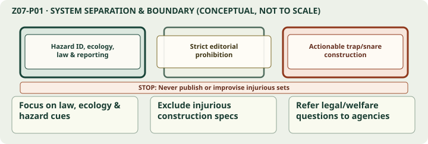

Z07-P01 · Traps and snares · New manuscript
Zone Scope: Law, Welfare and Zero Actionable Trap Construction
Frame Z07 strictly around wildlife ecology, legal compliance, animal welfare, hazard recognition, and bystander/pet safety without publishing injurious construction instructions.
When it applies · All readers reviewing trapping-related topics in the encyclopedia.
Equipment · Current state/federal wildlife regulations and authority contacts.

Actions
- Maintain a strict safety boundary across Z07: this reference covers ecology, statutory restrictions, animal welfare, bystander/pet avoidance, and authority referral—never actionable trap or snare construction or placement instructions.[L01, L02, L11]
- Recognize that improvised triggers, deadfalls, and unselective snares cause severe non-target harm, violate wildlife law, and offer poor emergency return compared with shelter, water, and signaling.[L01, L02, T01]
- Escalate any specialized regulatory, nuisance-wildlife, or furbearer-management questions directly to state wildlife agencies and certified trapper-education programs.[L01, L02]
Failure recognition · Publishing improvised trigger dimensions or snare setups risks severe human, pet, and protected-species injury and unlawful take.[L01, L02, L11]
Verify · All Z07 content stays strictly bounded to hazard recognition, ecology, law, welfare, and reporting.[L01, L02, L11]
Stop or change course · Stop immediately and decline any request to improvise, modify, or deploy unapproved injurious capture devices.[L01, L02, L11]
Evidence and editorial notes
- L01 · Minnesota DNR · Minnesota Trapping Regulations and Fur Harvest Rules (Current web edition)
- Section: Minnesota trapping licensing, seasons, and statutory limits · Conditions: Any regulated trapping activity or legal reference in Minnesota
Support: Trapping is strictly regulated by license, season, species, trap type, set location, check intervals, and landowner permission; unauthorized trapping is illegal.
Limitations: Emergency narratives never create an exemption to set traps or snares; verify current statute and DNR handbook every season. · Conflicting evidence: None noted.
Editorial note: Primary Z07 legal boundary. · Specialist reviewer: Wildlife law and DNR enforcement reviewer
Primary source · checked 2026-11-25 - L02 · Association of Fish & Wildlife Agencies · Best Management Practices for Trapping and Furbearer Welfare (Current web edition)
- Section: AFWA Best Management Practices for animal welfare and selectivity · Conditions: Evaluating trapping principles, welfare, and non-target risk
Support: AFWA BMPs evaluate regulated devices on animal welfare, efficiency, selectivity, user safety, and practicality through scientific testing.
Limitations: Improvised traps and snares lack scientific welfare testing and selectivity controls, causing severe injury and non-target capture. · Conflicting evidence: None noted.
Editorial note: Anchors Z07 welfare & conceptual classification without building instructions. · Specialist reviewer: Wildlife welfare scientist
Primary source · checked 2026-11-25
Current assessment · A04-L02 (2026-11-25) · Bounded support confirmed from an alternate source (A04): Supports regulated-device evaluation criteria in the program. Minnesota hunting index is the wrong evidence section. No device construction or authorization follows. Limits: Specialist review PENDING (Wildlife welfare scientist); publication HOLD. All release decisions pending. - L11 · Association of Fish & Wildlife Agencies · Best Management Practices for Trapping and Furbearer Welfare (Current web edition)
- Section: Conceptual classification of historic vs regulated capture categories · Conditions: Educational overview of mechanical hazard types without construction specs
Support: Historical and regulated devices fall into restraining (foothold, cage, cable restraint) and killing (body-grip) hazard classes with distinct spring-energy risks.
Limitations: Conceptual awareness supports hazard recognition only and must never include trigger dimensions, wire specs, or placement instructions. · Conflicting evidence: None noted.
Editorial note: Enforces Z07 no-actionable-construction editorial boundary. · Specialist reviewer: Safety and wildlife ethics reviewer
Primary source · checked 2026-11-25 - T01 · American Red Cross · First Aid Steps (current web edition)
- Section: First Aid Steps > Check the scene; check the person · Conditions: Lay responder in United States; assess safety before contact
Support: Check scene safety, responsiveness, breathing and immediately life-threatening conditions.
Limitations: Lay guidance does not replace advanced clinical or rescue protocols. · Conflicting evidence: None; universal first-response opening gate.
Editorial note: Anchors scene-safety-first rule across Z01. · Specialist reviewer: EMS and wilderness medicine
Primary source · checked 2026-11-24
Source lineage · New manuscript (Z07 P18 editorial safety gate) · Classification · New manuscript.